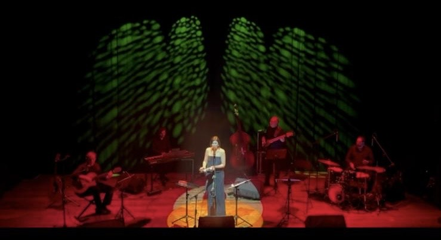

SELMAH (Selma Hernandes) è una cantante e compositrice brasiliana cresciuta artisticamente tra due mondi: la vibrante scena musicale di São Paulo, dove ha mosso i primi passi, e l'Italia, che frequenta dal 2002, da quando prese la sua seconda laurea a Perugia, in Lingua e Cultura Italiana, la sua prima casa europea.
Nata ad Atibaia, São Paulo, da una famiglia dalle radici profonde e diverse — paterna spagnola, materna indigena e africana — Selma porta nel sangue la complessità e la ricchezza della vera anima brasiliana. Questa molteplicità di radici — brasiliana, spagnola, indigena, africana ed europea — è il cuore pulsante della sua musica. SELMAH porta sul palco un repertorio che attraversa la bossa nova, il samba, e le contaminazioni contemporanee, che si riflettono nelle sue composizioni inedite, in un racconto sonoro autentico e raffinato.
Il riconoscimento della critica italiana è consolidato: definita dalla stampa specializzata come "una delle voci più interessanti della musica carioca", ha costruito nel tempo una reputazione solida nei circuiti teatrali, jazz e world music italiani ed europei.
Il suo successo Remédios — cover di Gabriella Ferri, prodotto e lanciato contemporaneamente all'uscita del film Saturno Contro di Ferzan Özpetek — è stato tra i brani più trasmessi dalle radio italiane, un vero elemento di rottura nella produzione musicale di quel periodo, quel modo soave e delicato di cantare, con una personalità inconfondibile.
SELMAH vanta un curriculum live di rilievo con presenze sui palchi importanti del circuito jazz e world music italiano e internazionale.
Ha condiviso il palco con Toquinho (tour italiano 2017), Toninho Horta (World Wide Tour 2024), Guinga (2004), Ornella Vanoni (2013), Celso Fonseca (2013), Giuseppe Milici, Daniele Scannapieco, Gianluca Littera, Gabriele Mirabassi, Renato Sellani, Roberto Ottaviano (2024), Orchestra Ouro Preto — presentandosi alla "Sala Sinopoli - Parco della Musica", Villa Celimontana (Rio-Buenos Aires), FIFA World Cup a Piazza di Spagna, SESC Brasil, SESC Palladium, TV Rede Globo Brasil, Radio Rai 1, fra altri.
La Produzione del album in uscita e del concerto sono a cura del chitarrista Luigi Rana, premiato come miglior arrangiatore a Sanremo nel 2004 e che vanta nel suo background diversi dischi d'oro e platino con vari artisti in Spagna, Asia e America e attualmente ha più di 3.000.000.000 di ascolti streaming nel mercato asiatico per la versione elettro-dance del suo brano "Batte forte" (Sanremo 2002).
SELMAH ha vinto il primo posto miglior composizione e interpretazione al "FAN Sesc di Porto Velho", il Premio Pierluigi Galluzzi a Polignano a Mare, e il premio Sinfonia d'Autore a Maiori. Si presenta al Festival dell'Amazonas, regione brasiliana dove ha vissuto per 6 anni. Ottiene grande riscontro a Cancún (Messico) dove presenta in diretta il suo concerto trasmesso anche in Guatemala e Belize. Viene scelto un suo brano per la colonna sonora del documentario della RAI sulla Bossa Nova (2008).
Formato acustico intimo per club, hotel 4/5★ ed eventi esclusivi
Formazione completa per teatri, festival e piazze
Il progetto live nella sua formazione completa vede in scena sei musicisti di alto profilo, uniti da una lunga storia artistica comune.
Selma Hernandes · Cantante, compositrice, interprete
Produttore musicale · Arrangiatore internazionale · Colonne sonore Disney
Armonica cromatica
Paolo Luiso (piano) · Filippo De Salvo (basso/Ctrbass) · Saverio Petruzzelis (batteria)
Il repertorio abbraccia i grandi compositori brasiliani — Jobim, Toquinho, Vinicius de Moraes, João Gilberto, Ary Barroso — fino ai contemporanei come Ivan Lins, Djavan, Adriana Calcanhoto e João Bosco, con incursioni nella MPB più contaminata e nelle composizioni originali di SELMAH e Luigi Rana, nonché alcune celebrazioni ai grandi nomi della musica italiana.
Oltre agli album e ai singoli ufficiali, i brani di SELMAH sono presenti in numerose compilation internazionali.
Per proposte di collaborazione, booking, festival, club e eventi privati in Italia, Europa e Brasile.
Rider tecnico, contratto e materiale stampa completo disponibili su richiesta. · Video promo disponibili su YouTube, Facebook e Instagram.